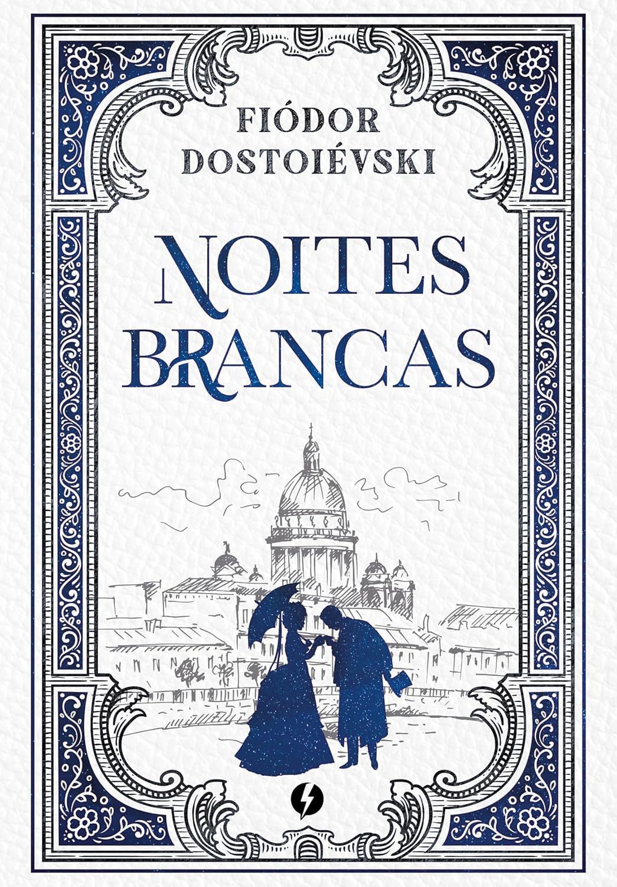

Resumo do livro:
Amor e Gelato e uma jornada encantadora e emocionante pelas paisagens deslumbrantes da Italia
que captura o coracao desde a primeira pagina acompanhamos Lina em uma busca por respostas sobre o passado de sua mae em Florenca
guiada por um diario antigo e pelo adoravel Ren o livro e simplesmente irresistivel pois mistura de forma perfeita um romance leve
e doce com uma descoberta familiar profunda e tocante capaz de fazer qualquer leitor se apaixonar e a leitura ideal para quem busca
uma historia reconfortante cheia de sorvetes maravilhosos e aquela sensacao gostosa de um verao europeu inesquecivel sendo impossivel
nao se encantar com cada capitulo dessa obra apaixonante
Resumo do livro:
À Sombra de Romeu e Julieta é uma releitura astuta que foca no caos político de Verona após a
morte dos protagonistas. A genialidade de Melinda Taub reside em transformar o noivado forçado entre Benvolio e Rosaline em uma trama
viciante de espionagem e romance relutante. Com diálogos afiados, o livro desconstrói o ódio entre Montecchio e Capuleto, provando que
a sobrevivência e a diplomacia podem ser tão fascinantes quanto a própria tragédia original.

Resumo do livro:
Noites Brancas é uma obra-prima da melancolia russa que captura a essência da solidão e do idealismo
em meio às curtas e mágicas noites de São Petersburgo. A genialidade de Dostoiévski reside em dar voz ao "Sonhador", um protagonista
que vive em seu mundo interior até encontrar em Nastenka uma conexão humana real, ainda que efêmera. É uma leitura lírica e agridoce,
que explora a tensão entre a fantasia e a realidade, provando de forma poética que um único momento de felicidade pode ser o suficiente
para justificar toda a existência de um homem.